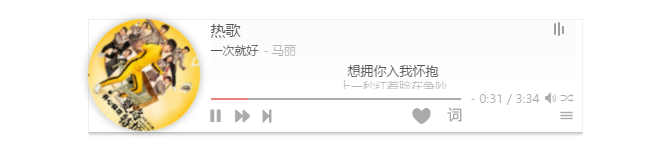
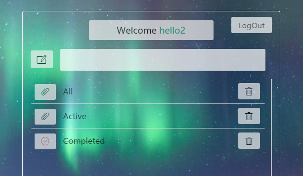

Basic info. 基本信息
-
个人信息:
胡国柱 / 男
-
常用ID:
24-magic
-
博客:
www.gzbamboo.org(开发中) -
GitHub:
www.github.com/24magic
Projects. 项目
前端项目
-
guozhu-FM音乐播放器
源代码 Demo一款小清新的 HTML5 音乐播放器，支持歌词、播放列表、播放模式（循环播放、随机播放、单曲循环），兼容现代浏览器和移动端，API 丰富、可扩展性强
原生 js 编写，使用 webpack 构建

-
Todo-List
源代码 Demo一款小清新的 TodoList ，支持注册、登陆功能，用户名、密码、邮箱格式错误会有提醒，每条Todo可以标记完成、删除、滚动，兼容现代浏览器，使用React框架编写，leanCloud来存储数据
JSX 编写，使用 React 构建

-
Resume
源代码就是这个简历的源码
设计优雅、内容完善的静态简历页面，可以用浏览器直接生成合适尺寸的 PDF，使用 gulp 构建
后端项目

Skill. 技能清单
前端
后端
Node.js
了解 Node.js 的开发，使用 sequelize 和 localstorage 做数据存储和缓存，使用 pm2 和 Docker 部署